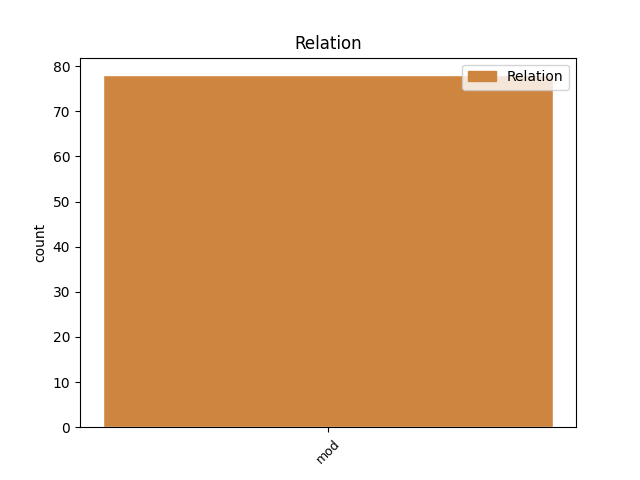
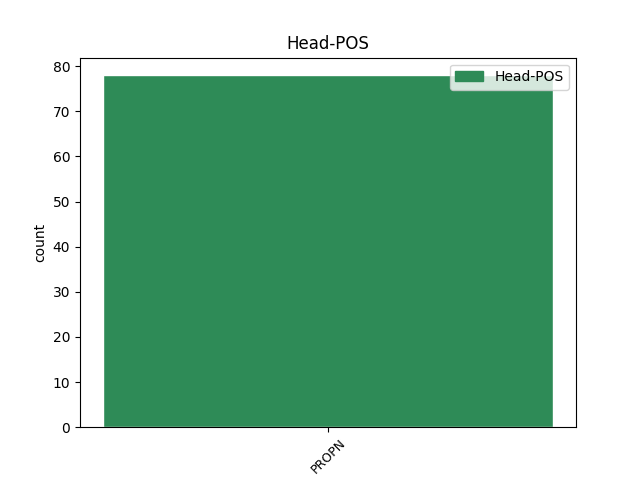
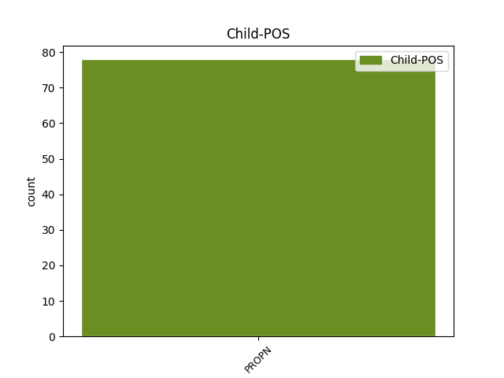

Distribution of features within this leaf



Agreement Rules sorted by frequency.
- When the dependent token is the modifer(mod) of the head token, and the head token is PROPN and the dependent token is PROPN.
1 Первое _ _ _ _ 0 _ _ _
2 документальное _ _ _ _ 0 _ _ _
3 упоминание _ _ _ _ 0 _ _ _
4 села _ _ _ _ 0 _ _ _
5 встречается _ _ _ _ 0 _ _ _
6 в _ _ _ _ 0 _ _ _
7 Камеральном _ _ _ _ 0 _ _ _
8 Описании _ _ _ _ 0 _ _ _
9 Крыма _ _ _ _ 0 _ _ _
10 ... _ _ _ _ 0 _ _ _
11 1784 _ _ _ _ 0 _ _ _
12 года _ _ _ _ 0 _ _ _
13 , _ _ _ _ 0 _ _ _
14 судя _ _ _ _ 0 _ _ _
15 по _ _ _ _ 0 _ _ _
16 которому _ _ _ _ 0 _ _ _
17 , _ _ _ _ 0 _ _ _
18 в _ _ _ _ 0 _ _ _
19 последний _ _ _ _ 0 _ _ _
20 период _ _ _ _ 0 _ _ _
21 Крымского _ _ _ _ 0 _ _ _
22 ханства _ _ _ _ 0 _ _ _
23 Гаджи Гаджи PROPN NNP Animacy=Inan|Case=Nom|Gender=Masc|Number=Sing 24 mod _ _
24 Бешер Бешер PROPN NNP Animacy=Inan|Case=Nom|Gender=Masc|Number=Sing 0 _ _ _
25 входил _ _ _ _ 0 _ _ _
26 в _ _ _ _ 0 _ _ _
27 Кучук _ _ _ _ 0 _ _ _
28 Карасовский _ _ _ _ 0 _ _ _
29 кадылык _ _ _ _ 0 _ _ _
30 Карасъбазарскаго _ _ _ _ 0 _ _ _
31 каймаканства _ _ _ _ 0 _ _ _
32 . _ _ _ _ 0 _ _ _
Disagree Examples:
1 МСЦ МСЦ PROPN NNP Animacy=Inan|Case=Nom|Gender=Masc|Number=Sing 0 _ _ _
2 ЕХБ ЕХБ PROPN NNP Animacy=Anim|Case=Gen|Gender=Masc|Number=Plur 1 mod _ _
3 состоит _ _ _ _ 0 _ _ _
4 из _ _ _ _ 0 _ _ _
5 15 _ _ _ _ 0 _ _ _
6 объединений _ _ _ _ 0 _ _ _
7 : _ _ _ _ 0 _ _ _
8 В _ _ _ _ 0 _ _ _
9 состав _ _ _ _ 0 _ _ _
10 Международного _ _ _ _ 0 _ _ _
11 совета _ _ _ _ 0 _ _ _
12 церквей _ _ _ _ 0 _ _ _
13 ЕХБ _ _ _ _ 0 _ _ _
14 входят _ _ _ _ 0 _ _ _
15 25 _ _ _ _ 0 _ _ _
16 членов _ _ _ _ 0 _ _ _
17 Совета _ _ _ _ 0 _ _ _
18 и _ _ _ _ 0 _ _ _
19 15 _ _ _ _ 0 _ _ _
20 его _ _ _ _ 0 _ _ _
21 сотрудников _ _ _ _ 0 _ _ _
22 , _ _ _ _ 0 _ _ _
23 которые _ _ _ _ 0 _ _ _
24 несут _ _ _ _ 0 _ _ _
25 ответственность _ _ _ _ 0 _ _ _
26 за _ _ _ _ 0 _ _ _
27 деятельность _ _ _ _ 0 _ _ _
28 братства _ _ _ _ 0 _ _ _
29 в _ _ _ _ 0 _ _ _
30 межсъездный _ _ _ _ 0 _ _ _
31 период _ _ _ _ 0 _ _ _
32 . _ _ _ _ 0 _ _ _
1 В _ _ _ _ 0 _ _ _
2 первые _ _ _ _ 0 _ _ _
3 два _ _ _ _ 0 _ _ _
4 года _ _ _ _ 0 _ _ _
5 Дни _ _ _ _ 0 _ _ _
6 без _ _ _ _ 0 _ _ _
7 автомобилей _ _ _ _ 0 _ _ _
8 были _ _ _ _ 0 _ _ _
9 проведены _ _ _ _ 0 _ _ _
10 в _ _ _ _ 0 _ _ _
11 Рейкьявике _ _ _ _ 0 _ _ _
12 ( _ _ _ _ 0 _ _ _
13 Исландия _ _ _ _ 0 _ _ _
14 ) _ _ _ _ 0 _ _ _
15 , _ _ _ _ 0 _ _ _
16 Бате _ _ _ _ 0 _ _ _
17 ( _ _ _ _ 0 _ _ _
18 Сомерсет _ _ _ _ 0 _ _ _
19 , _ _ _ _ 0 _ _ _
20 Великобритания _ _ _ _ 0 _ _ _
21 ) _ _ _ _ 0 _ _ _
22 и _ _ _ _ 0 _ _ _
23 Ля Ля PROPN NNP Animacy=Inan|Case=Gen|Gender=Fem|Number=Sing 24 mod _ _
24 Рошели Рошель PROPN NNP Animacy=Inan|Case=Loc|Gender=Fem|Number=Sing 0 _ _ _
25 ( _ _ _ _ 0 _ _ _
26 Франция _ _ _ _ 0 _ _ _
27 ) _ _ _ _ 0 _ _ _
28 ; _ _ _ _ 0 _ _ _
29 в _ _ _ _ 0 _ _ _
30 1995 _ _ _ _ 0 _ _ _
31 году _ _ _ _ 0 _ _ _
32 для _ _ _ _ 0 _ _ _
33 поддержания _ _ _ _ 0 _ _ _
34 подобных _ _ _ _ 0 _ _ _
35 Дней _ _ _ _ 0 _ _ _
36 был _ _ _ _ 0 _ _ _
37 создан _ _ _ _ 0 _ _ _
38 неформальный _ _ _ _ 0 _ _ _
39 Консорциум _ _ _ _ 0 _ _ _
40 World _ _ _ _ 0 _ _ _
41 Car _ _ _ _ 0 _ _ _
42 Free _ _ _ _ 0 _ _ _
43 Days _ _ _ _ 0 _ _ _
44 . _ _ _ _ 0 _ _ _
1 Была _ _ _ _ 0 _ _ _
2 основана _ _ _ _ 0 _ _ _
3 в _ _ _ _ 0 _ _ _
4 Кандагаре _ _ _ _ 0 _ _ _
5 в _ _ _ _ 0 _ _ _
6 1747 _ _ _ _ 0 _ _ _
7 году _ _ _ _ 0 _ _ _
8 полководцем _ _ _ _ 0 _ _ _
9 Ахмад ахмад PROPN NNP Animacy=Anim|Case=Nom|Gender=Masc|Number=Sing 12 mod _ SpaceAfter=No
10 - _ _ _ _ 0 _ _ _
11 шахом _ _ _ _ 0 _ _ _
12 Дуррани Дуррани PROPN NNP Animacy=Anim|Case=Ins|Gender=Masc|Number=Sing 0 _ _ _
13 . _ _ _ _ 0 _ _ _
1 В _ _ _ _ 0 _ _ _
2 июне _ _ _ _ 0 _ _ _
3 1945 _ _ _ _ 0 _ _ _
4 года _ _ _ _ 0 _ _ _
5 Абилов _ _ _ _ 0 _ _ _
6 был _ _ _ _ 0 _ _ _
7 направлен _ _ _ _ 0 _ _ _
8 на _ _ _ _ 0 _ _ _
9 учебу _ _ _ _ 0 _ _ _
10 в _ _ _ _ 0 _ _ _
11 Высшую _ _ _ _ 0 _ _ _
12 партийную _ _ _ _ 0 _ _ _
13 школу _ _ _ _ 0 _ _ _
14 при _ _ _ _ 0 _ _ _
15 ЦК ЦК PROPN NNP Animacy=Inan|Case=Loc|Gender=Masc|Number=Sing 0 _ _ _
16 ВКП ВКП PROPN NNP Animacy=Inan|Case=Gen|Gender=Fem|Number=Sing 15 mod _ _
17 ( _ _ _ _ 0 _ _ _
18 б _ _ _ _ 0 _ _ _
19 ) _ _ _ _ 0 _ _ _
20 , _ _ _ _ 0 _ _ _
21 где _ _ _ _ 0 _ _ _
22 он _ _ _ _ 0 _ _ _
23 проучился _ _ _ _ 0 _ _ _
24 почти _ _ _ _ 0 _ _ _
25 три _ _ _ _ 0 _ _ _
26 года _ _ _ _ 0 _ _ _
27 . _ _ _ _ 0 _ _ _
1 В _ _ _ _ 0 _ _ _
2 50 _ _ _ _ 0 _ _ _
3 км _ _ _ _ 0 _ _ _
4 от _ _ _ _ 0 _ _ _
5 Верхотурья _ _ _ _ 0 _ _ _
6 в _ _ _ _ 0 _ _ _
7 селе _ _ _ _ 0 _ _ _
8 Меркушино _ _ _ _ 0 _ _ _
9 подвизался _ _ _ _ 0 _ _ _
10 святой _ _ _ _ 0 _ _ _
11 праведный _ _ _ _ 0 _ _ _
12 Симеон Симеон PROPN NNP Animacy=Anim|Case=Nom|Gender=Masc|Number=Sing 0 _ _ _
13 Верхотурский _ _ _ _ 0 _ _ _
14 всея _ _ _ _ 0 _ _ _
15 Сибири Сибирь PROPN NNP Animacy=Inan|Case=Gen|Gender=Fem|Number=Sing 12 mod _ _
16 чудотворец _ _ _ _ 0 _ _ _
17 -- _ _ _ _ 0 _ _ _
18 покровитель _ _ _ _ 0 _ _ _
19 рыбаков _ _ _ _ 0 _ _ _
20 . _ _ _ _ 0 _ _ _